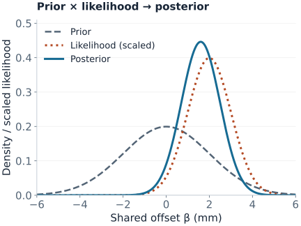
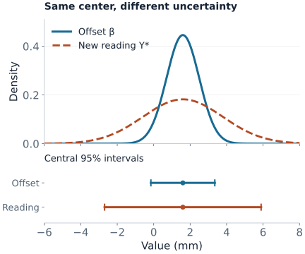

Bayesian Regression
A fitted line gives one prediction, but a decision often needs more: how uncertain are the coefficients, and how variable could the next outcome be? Bayesian regression answers those questions with probability distributions. It combines a model of the observations with a model of plausible parameter values.
- Prior: uncertainty about parameters before using the current outcomes.
- Likelihood: how well each parameter value explains those outcomes.
- Posterior: updated parameter uncertainty after combining the two.
The omitted constant makes the posterior integrate to one. A posterior is a distribution over parameters under the stated model; a posterior predictive distribution also includes the randomness of a future observation.
A Calibration Example with All Assumptions Stated
Suppose four instrument readings have errors of $y=(0,1,3,4)$ millimeters relative to a reference. Model their common calibration offset $\beta$ with an intercept-only regression:
$$y_i=\beta+\varepsilon_i,\qquad \varepsilon_i\overset{\mathrm{iid}}{\sim}N(0,4),\qquad \beta\sim N(0,4).$$Here $N(m,v)$ denotes a normal distribution with variance $v$, not standard deviation. For this example, assume the observation-noise standard deviation $\sigma=2$ mm is known from a separate instrument study. The prior also has standard deviation 2 mm and is centered at zero. These are explicit modeling choices, not facts learned from the four readings.
The sample mean is $\bar y=2$. Its sampling variance is $\sigma^2/n=4/4=1$, so the likelihood for $\beta$ has the shape of a normal curve centered at 2 with variance 1.

Compute the Update with Precision
Precision is inverse variance. With a prior $\beta\sim N(m_0,\tau^2)$ and known observation variance $\sigma^2$, the posterior is $N(m_n,v_n)$, where
$$v_n=\frac{1}{1/\tau^2+n/\sigma^2},\qquad m_n=v_n\left(\frac{m_0}{\tau^2}+\frac{n\bar y}{\sigma^2}\right).$$In our example, prior precision is $1/4$ and data precision is $4/4=1$. Therefore
$$v_n=\frac{1}{1/4+1}=0.8,\qquad m_n=0.8\left(\frac{0}{4}+\frac{4(2)}4\right)=1.6.$$The posterior mean is a weighted average, $m_n=(1-w)m_0+w\bar y$, with $w=n\tau^2/(\sigma^2+n\tau^2)$. Here the data receive weight $0.8$ and the prior receives weight $0.2$. This movement from the data-only estimate 2 toward the prior mean 0 is shrinkage.
A stronger prior changes the answer more. Keeping the same observations and known noise, but changing only the prior standard deviation, gives:
| Prior SD | Data weight $w$ | Posterior mean | Posterior SD |
|---|---|---|---|
| 1 mm | 0.500 | 1.000 mm | 0.707 mm |
| 2 mm | 0.800 | 1.600 mm | 0.894 mm |
| 4 mm | 0.941 | 1.882 mm | 0.970 mm |
A tighter interval from a stronger prior is not extra empirical evidence. Report sensitivity when plausible prior choices change a decision. The derivation and known-versus-unknown variance cases appear in Murphy's Gaussian conjugacy notes.
Uncertainty About the Offset Is Not Noise in the Next Reading
The posterior for the shared offset is $\beta\mid y\sim N(1.6,0.8)$. A new reading has error $Y_*=\beta+\varepsilon_*$, with fresh independent noise of variance 4. Averaging over posterior uncertainty gives
$$Y_*\mid y\sim N(1.6,\underbrace{0.8}_{\text{offset uncertainty}}+\underbrace{4}_{\text{new-reading noise}})=N(1.6,4.8).$$
| Target | Posterior or predictive SD | Central 95% interval |
|---|---|---|
| Shared offset $\beta$ | $\sqrt{0.8}=0.894$ mm | $(-0.153,\ 3.353)$ mm |
| One future error $Y_*$ | $\sqrt{4.8}=2.191$ mm | $(-2.694,\ 5.894)$ mm |
A 95% credible interval contains 95% of the posterior probability for its parameter under the model and prior. A 95% posterior predictive interval contains 95% of the model's predictive probability for a new outcome. Neither statement by itself proves 95% coverage on future real-world data when the model is wrong.
Reproduce the update and both intervals
import numpy as np
from scipy.stats import norm
y = np.array([0., 1., 3., 4.])
prior_mean, prior_var, noise_var = 0., 4., 4.
post_var = 1 / (1 / prior_var + len(y) / noise_var)
post_mean = post_var * (prior_mean / prior_var + y.sum() / noise_var)
for name, variance in [("offset", post_var), ("new reading", post_var + noise_var)]:
interval = norm.ppf([0.025, 0.975], loc=post_mean, scale=np.sqrt(variance))
print(name, post_mean, variance, interval)The figure source also checks the closed-form posterior by numerically normalizing prior times likelihood, and checks prediction by integrating over the posterior. Stan's posterior predictive guide explains how the same averaging works for models without an analytic solution.
From One Offset to Many Regression Coefficients
For a design matrix $X$ and a vector of coefficients, the same Gaussian update becomes
$$y\mid\beta\sim N(X\beta,\sigma^2I),\qquad \beta\sim N(m_0,V_0),$$ $$V_n^{-1}=V_0^{-1}+X^\top X/\sigma^2,\qquad m_n=V_n\left(V_0^{-1}m_0+X^\top y/\sigma^2\right).$$These formulas assume a fixed design, known positive $\sigma^2$, and a proper Gaussian prior with positive-definite covariance $V_0$. “Conjugate” means the posterior remains Gaussian. In code, solve linear systems with suitable matrix factorizations instead of explicitly computing inverses.
At a new feature vector $x_*$, posterior uncertainty about the mean is $x_*^\top V_nx_*$. Predictive variance adds $\sigma^2$. The off-diagonal entries of $V_n$ matter: correlated coefficient uncertainty cannot be replaced by independent error bars.
With a zero-centered prior covariance $\tau^2I$, the posterior mode minimizes
$$\lVert y-X\beta\rVert^2+\frac{\sigma^2}{\tau^2}\lVert\beta\rVert^2.$$This is ridge regression with $\lambda=\sigma^2/\tau^2$ under the displayed sum-of-squares convention. Matching a ridge implementation that excludes the intercept requires matching that prior choice too. Here the posterior mean equals its mode because the posterior is Gaussian; that equality need not hold in other models.
A proper prior can make a rank-deficient problem estimable, but it does not make unsupported coefficient directions identifiable from the data. Rescaling a predictor also changes what a coefficient prior means. Define prior scales in the units actually used by the model. See the Stan regression guide for practical prior and regression specifications.
For binary outcomes, use a Bernoulli likelihood with a logistic link and coefficient priors. A Gaussian coefficient prior is no longer conjugate. Predict a probability by averaging the inverse-link probabilities over posterior draws; transforming the mean coefficient generally gives a different answer. The logistic regularization article connects priors with separation and finite estimates.
What Changes When Noise Variance Is Unknown?
The numerical intervals above condition on $\sigma=2$. Estimating $\sigma$ from these same four readings and plugging it into those formulas would ignore its uncertainty. A Bayesian model instead puts a prior on the noise scale and infers it jointly with the coefficients.
One conjugate choice is a normal–inverse-gamma prior: $\beta\mid\sigma^2$ is Gaussian with covariance proportional to $\sigma^2$, and $\sigma^2$ has an inverse-gamma prior. Integrating out that variance yields Student-$t$ marginal coefficient and predictive distributions. Other choices, such as an independent normal coefficient prior and half-normal noise-scale prior, need not have this closed form.
Under the Gaussian observation model, the law of total variance makes the remaining distinction explicit, when the moments exist:
$$\operatorname{Var}(Y_*\mid y,X,x_*)= E[\sigma^2\mid y,X]+\operatorname{Var}(x_*^\top\beta\mid y,X).$$The expectation and variance now average over the joint posterior. To simulate a prediction, draw $(\beta,\sigma)$ jointly, then draw the future outcome conditional on that pair. Using a single best-fit coefficient and noise value loses this averaging.
Partial Pooling Shares Information Across Groups
Several instruments may each have their own offset. A hierarchical model can use $\beta_g\sim N(\mu,\tau^2)$ and learn the shared location $\mu$ and between-instrument spread $\tau$. Put priors on those shared parameters as well, so their uncertainty propagates into the instrument estimates.
- No pooling: estimate each instrument independently.
- Complete pooling: force every instrument to share one offset.
- Partial pooling: allow different offsets while sharing information through the group distribution.
Conditional on the shared parameters, an instrument with little or noisy data is pulled more strongly toward $\mu$. The groups must be comparable after modeled differences are accounted for; this exchangeability assumption is substantive. Predicting another reading from a known instrument differs from predicting a reading from a new instrument, whose offset has not been observed.
Computation Is a Separate Source of Error
This example needs no sampling. For more complex models, Laplace approximation uses a local Gaussian approximation, variational inference optimizes an approximating distribution, and MCMC explores the posterior with dependent draws. Approximation error and finite-sampling error are different from the uncertainty in the underlying model.
With MCMC, inspect multiple chains, rank-based $\hat R$, bulk and tail effective sample sizes, and Monte Carlo error for the quantities you will report. For Hamiltonian sampling, investigate divergent transitions. A large raw draw count does not guarantee accurate tail probabilities. Stan's diagnostic guidance explains what these checks detect and how to respond.
Validate the Model, Not Just the Sampler
- Before fitting, simulate plausible data. In the calibration model, the prior predictive distribution for a reading is $N(0,8)$. Decide whether that scale makes sense for the instrument before looking at the posterior.
- After fitting, compare replicated data with observations. Generate readings from the posterior predictive model and inspect spread, tails, residual patterns, and group differences. Checking only the mean can miss a wrong noise model.
- Vary defensible assumptions. Repeat the fit with plausible prior scales and observation models. A narrow posterior cannot account for a missing predictor, dependence, or a wrong likelihood unless the model represents it.
- Evaluate genuinely held-out predictions. Use predictive density scores, interval coverage and width, and point accuracy appropriate to the decision. Split by time or group when that matches deployment; keep prior tuning and preprocessing inside training data.
Predictive checks diagnose what the model can generate; held-out evaluation measures predictive performance on unused outcomes. They answer different questions. Good sampler diagnostics establish neither model adequacy nor future predictive accuracy.
Quick Checks
| Question | Answer |
|---|---|
| Why is the new-reading interval wider? | It includes observation noise as well as uncertainty about the shared offset. |
| Does Bayesian regression always require MCMC? | No. The known-variance Gaussian model here has an exact posterior and predictive distribution. |
| Is a posterior mode the whole Bayesian answer? | No. It is one parameter value; prediction averages over the posterior, including dependence and uncertainty. |
| Does a prior remove a lack of information? | It adds assumptions. Check sensitivity where the data cannot identify the parameters on their own. |